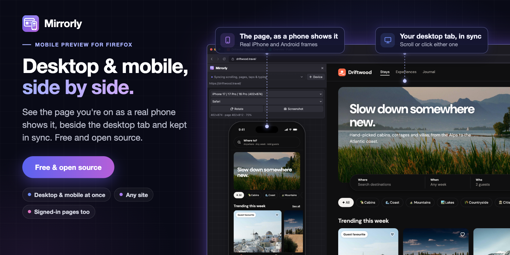
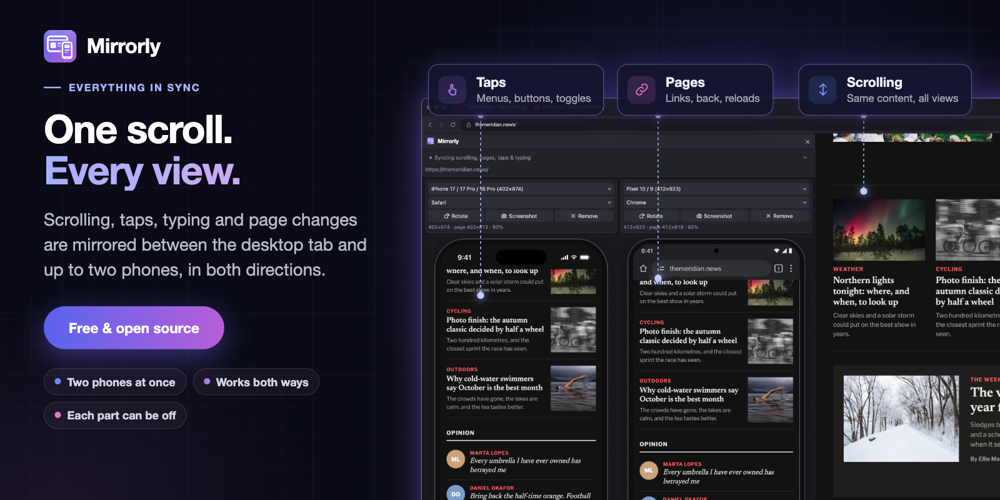
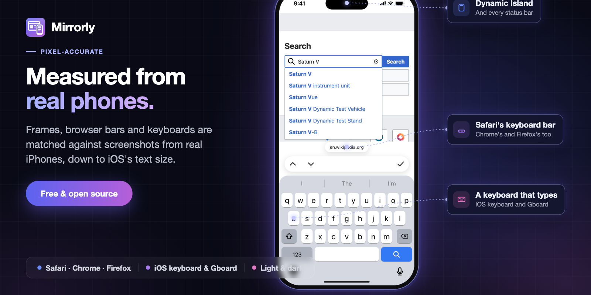
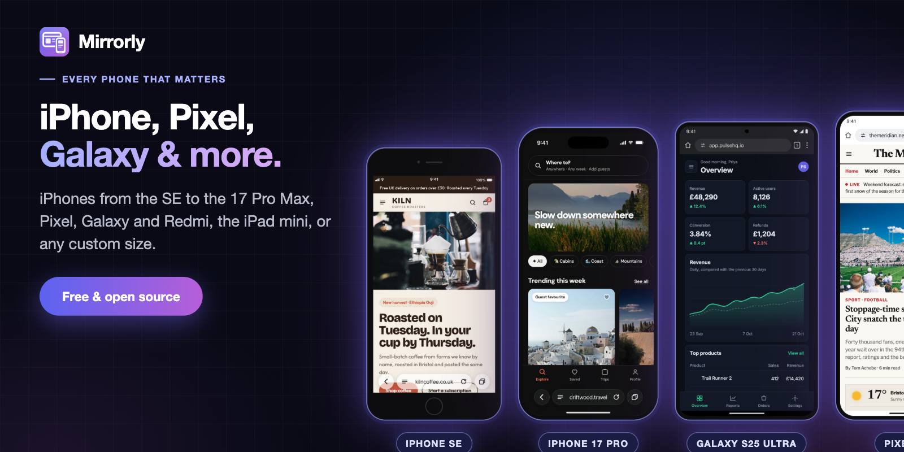
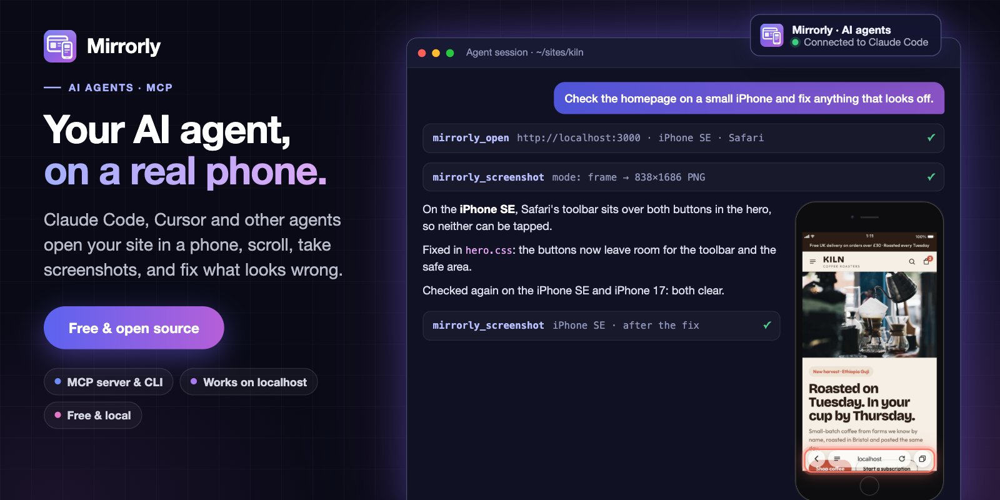

Mobile preview for Firefox
A free, open source Firefox extension that shows the page you're on as a phone shows it, in Firefox's sidebar, right next to the desktop version. Real iPhone and Android frames, with every scroll, tap and keystroke kept in sync between the two.

The desktop page and its mobile version, side by side.
Open the sidebar on any site and Mirrorly loads the same page in a phone. Scroll the desktop and the phone follows; tap a menu in the phone and it opens on the desktop too. It's for anyone who builds, tests or reviews websites and wants to see the mobile layout without reaching for a real phone every time.
- Works on any site
- Localhost too
- Signed-in pages too
- Up to ten devices
- AI agents (MCP)
- No account needed
- No tracking
- MIT licensed
Firefox 128 or later. Loading it from source is covered in the README.
Why not Responsive Design Mode?
Firefox's built-in Responsive Design Mode turns your tab into a blank rectangle at a phone's width. Mirrorly does more:
- It's more accurate. Real device frames, browser bars, keyboards, safe areas and iOS's Text Size, measured from real phones, so you see what Safari's toolbar or the keyboard actually covers.
- It keeps everything in sync. Scrolling, taps, typing and page changes are mirrored between the desktop tab and the phone, both ways.
- Desktop and mobile are on screen at once. The desktop page stays as it is, with the phone beside it in the sidebar. Or two phones, say an iPhone next to a Pixel.
Everything stays in sync
Scrolling lines up on the same content rather than the same percentage, so the phone shows the part of the page you're looking at even though its layout is much taller. Taps on buttons, menus and toggles are mirrored, text typed into a form appears in every view, and links, back and forward, reloads and tab switches carry across. Carousels and scrollable panels follow too. It works in both directions, and each part can be turned off.
Add more devices, up to ten, and you can put an iPhone next to a Pixel, all in
sync with the desktop tab. The phones use your tabs' cookies, so pages you're
signed in to, like dashboards and admin panels, work in the mobile view too, and
so do sites on localhost or a staging server.
Right-click anything on the page and choose Show in Mirrorly: the sidebar opens, and each phone scrolls to its copy of it and outlines it.

An iPhone and a Pixel, both following the desktop tab.
Measured from real phones
The frames, the browser bars and the keyboards are matched against screenshots from real iPhones: the Dynamic Island and status bar, Safari 26's floating toolbar, Chrome's and Firefox's bars, and the bar each browser puts above the keyboard. The page gets the viewport, user agent, pixel ratio and safe areas that phone would give it, so a site that asks how much of the screen Safari's toolbar covers gets the right answer.
Tap a text field and the keyboard slides up: the iOS keyboard on iPhones, Gboard on Android, with the email and phone layouts too. You can type on it. The iOS Text Size setting is there as well, for sites that follow it.

The iOS keyboard and Safari's keyboard bar, typing into a site's search.
Every phone that matters
iPhones from the SE to the 17 Pro Max, Pixel, Galaxy and Redmi, the iPad mini, or any custom size. Phones with identical screens share an entry, so the list stays short. Draw each one in Safari, Chrome or Firefox, or just the bare screen, and rotate it to landscape.

An iPhone SE, iPhone 17 Pro, Galaxy S25 Ultra and Pixel 10, drawn at the same scale.
Feels like a touch screen
With Touch on, a fingertip replaces the pointer, you drag to scroll
(with momentum), and hover effects are switched off: :hover styles never
apply, and (hover) and (pointer) media queries answer as a phone
would. The page gets touch events, and pointer events report a touch, so
carousels and swipe menus behave as they do under a finger. Light and dark mode
switch the phone's bars and tell the page which to use.
Screenshots
Screenshot saves a PNG of the phone at its real resolution (1206 × 2622 for an iPhone 17 Pro screen), ready for a bug report or a design review: with the frame on a transparent background, just the page as it's shown, or the whole page from top to bottom.
Let AI agents use it
Coding agents build pages they never see on a phone. Mirrorly's MCP server gives
them one: Claude Code, Cursor and other agents open your page (a dev server on
localhost works) on an iPhone or Android, scroll, take screenshots and read
them, then fix what looks wrong and check again. One command sets it up, and it all runs
on your computer.

An agent finds buttons hidden under Safari's toolbar on an iPhone SE, fixes them, and checks again.
npx -y github:dazecoop/mirrorly installSetting it up and using it covers the tools, example prompts and the command line.
Privacy
Mirrorly has no account, no analytics, no tracking and no server. Your settings are stored by Firefox on your computer. The only network requests it makes are for the page you're already viewing, and the privacy policy explains each one and why each permission is needed.
Help and source
Questions, bugs and feature requests go to the support page. Mirrorly is MIT licensed and the full source is on GitHub.
Support my work
If my projects have been useful to you and you’d like to support the work, you can buy me a coffee. Completely optional, but always appreciated!